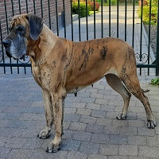
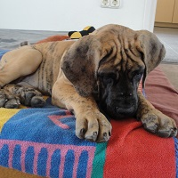
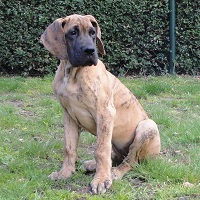
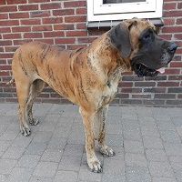

Qubi vom Dünner Land
- Teef - geel - NHSB 3092063 (geïmporteerd uit Duitsland VDH/DDC 129935)
- Geboren op 5 januari 2017
- EuDDC-aangekeurd op 23 november 2019 (rapport)
- Heupdysplasie 13 december 2019: HD-A (rapport)
- DCM-screening 13 december 2019: DCM-vrij
Stamboom


Even voorstellen
Qubi is uit Duitsland geïmporteerd en afkomstig uit de kennel Vom Dünner Land van Petra en Klaus-Ulrich Ebke. Ze kwam als pup bij ons in huis in het voorjaar van 2017, net voor de geboorte van ons B-nest. Tot dan waren al onze doggen uit de lijn van de kennel Van de Maginaris. Qubi heeft geheel ander bloed in de aderen, en dat is ook te merken aan het ander karakter. Ook zij is heel lief en aanhankelijk, maar nog nieuwsgieriger en er zit wat meer ondeugd in. Beide lijnen hebben zo hun eigen charme en vullen elkaar mooi aan. Ons beoogde C-nest wordt een mix van beide lijnen, met Qubi als moeder en Bullus als vader.



